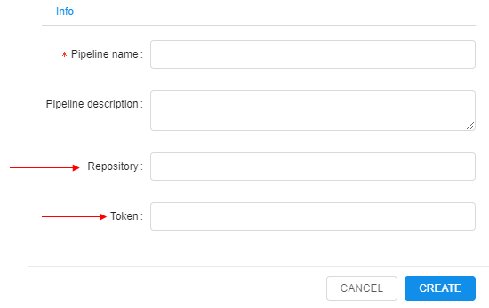
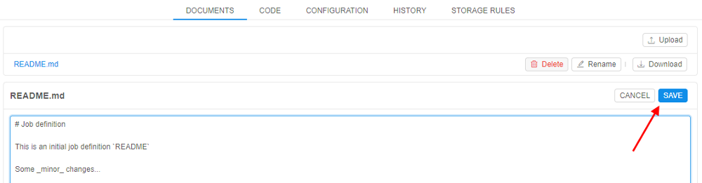
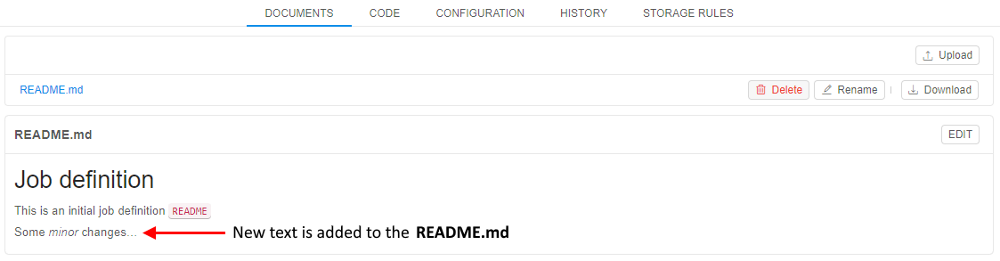
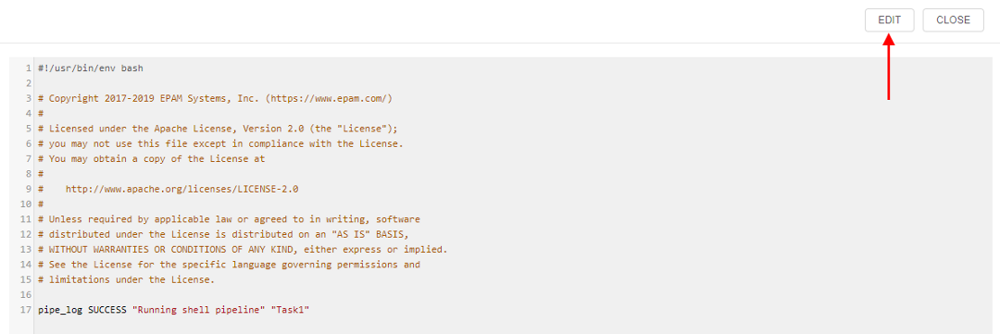
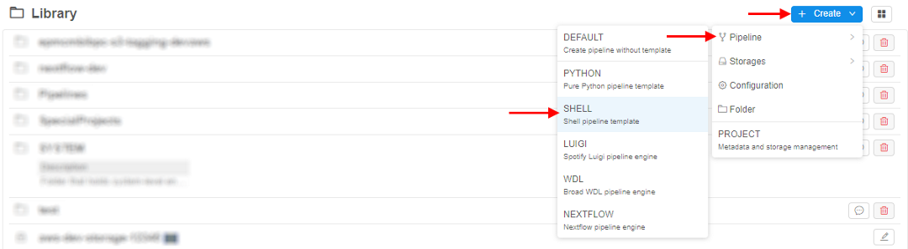
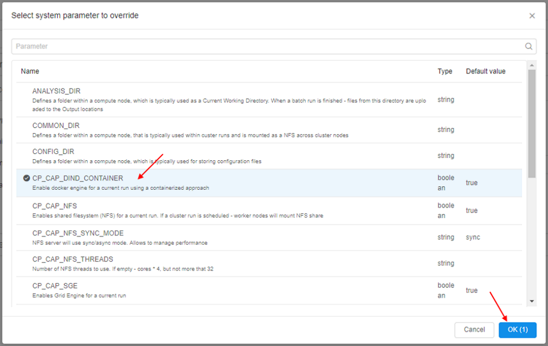
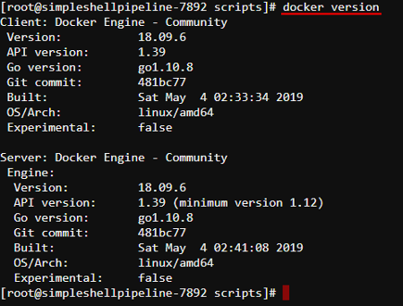
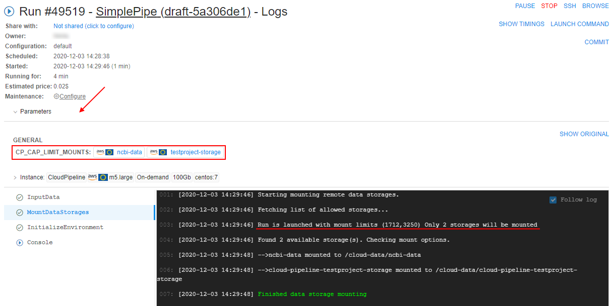

6.1. Create and configure pipeline
- Create a pipeline in a Library space
- Customize a pipeline version
- Edit a pipeline info
- Example: Create Pipeline
- Example: Add pipeline configuration
- Example: Create a configuration that uses system parameter
- Example: Limit mounted storages
To create a Pipeline in a Folder you need to have WRITE permission for that folder and the ROLE_PIPELINE_MANAGER role. To edit pipeline you need just WRITE permissions for a pipeline. For more information see 13. Permissions.
To create a working pipeline version you need:
- Create a pipeline in a Library space
- Customize a pipeline version:
- Edit documentation (optional)
- Edit Code file
- Edit Configuration, Add new configuration (optional)
- Add storage rules (optional).
Create a pipeline in a Library space
- Go to the "Library" tab and select a folder.
- Click + Create → Pipeline and choose one of the built-in pipeline templates (
Python,Shell,Snakemake,Luigi,WDL,Nextflow) or chooseDEFAULTitem to create a pipeline without a template. Pipeline template defines the programming language for a pipeline. As templates are empty user shall write pipeline logic on his own. - Enter pipeline's name (pipeline description is optional) in the popped-up form.
- Click the Create button.
- A new pipeline will appear in the folder.
Note: To configure repository where to store pipeline versions click the Edit repository settings button.
Click on the button and two additional fields will appear: Repository (repository address) and Token (password to access a repository).
 - The new pipeline will appear in a Library space.
Customize a pipeline version
Click a pipeline version to start its configuration process.

Edit documentation (optional)
This option allows you to make a detailed description of your pipelines.
Navigate to the Documents tab and:
- Click Edit.

- Change the document using a markdown language.
- Click the Save button.
 - Enter a description of the change and click Commit.

- Changes are saved.

Edit code section
It is not optional because you need to create a pipeline that will be tailored to your specific needs. For that purpose, you need to extend basic pipeline templates/add new files.
- Navigate to the Code tab. Click on any file you want to edit.

Note: each pipeline version has a default code file: it named after a pipeline and has a respective extension. - A new window with file contents will open. Click the Edit button and change the code file in the desired way.
 - When you are done, click the Save button.

- You'll be asked to write a Commit message (e.g. 'added second "echo" command'). Then click the Commit button.
- After that changes will be applied to your file.
Note: all code files are downloaded to the node to run the pipeline. Just adding a new file to the Code section doesn't change anything. You need to specify the order of scripts execution by yourself.
E.g. you have three files in your pipeline: first.sh (main_file), second.sh and config.json. cmd_template parameter is chmod +x $SCRIPTS_DIR/src/* && $SCRIPTS_DIR/src/[main_file]. So in the first.sh file you need to explicitly specify execution of second.sh script for them both to run inside your pipeline, otherwise this file will be ignored.
Edit pipeline configuration (optional)
See details about pipeline configuration parameters here.
Every pipeline has default pipeline configuration from the moment it was created.
To change default pipeline configuration:
- Navigate to the Configuration tab.
- Expand "Exec environment" and "Advanced" tabs to see a full list of pipeline parameters. "Parameters" tab is opened by default.

- Change any parameter you need. In this example, we will set Cloud Region to Europe Ireland, Disk to 40 Gb and set the Timeout to 400 mins.
- Click the Save button.
- Now this will be the default pipeline configuration for the pipeline execution.
Add/delete storage rules (optional)
This section allows configuring what data will be transferred to an STS after pipeline execution.
To add a new rule:
- Click the Add new rule button. A pop-up will appear.

- Enter File mask and then tick the box "Move to STS" to move pipeline output data to STS after pipeline execution.
Note: If many rules with different Masks are present all of them are checked one by one. If a file corresponds to any of rules - it will be uploaded to the bucket. - To delete storage rule click the Delete button in the right part of the storage rule's row.
Edit a pipeline info
To edit a pipeline info:
- Click the Gear icon in the right upper corner of the pipeline page
- The popup with the pipeline info will be opened:
Here you can edit pipeline name (a) and description (b) - To edit repository settings click the corresponding button (c):
Here you can edit access token to a repository (d)
Note: the "Repository" field is disabled for the existing pipelines - Click the SAVE button to save changes
Note: if you rename a pipeline the corresponding GitLab repo will be automatically renamed too. So, the clone/pull/push URL will change. Make sure to change the remote address, if this pipeline is used somewhere. How it works:
- Open the pipeline:
- Click the GIT REPOSITORY button in the right upper corner of the page:
Pipeline name and repository name are identical- Click the Gear icon in the right upper corner.
In the popup change pipeline name and click the SAVE button:
- Click the GIT REPOSITORY button again:
Pipeline name and repository name are identical
Also, if you want just rename a pipeline without changing its other info fields:
- Hover over the pipeline name at the "breadcrumbs" control in the top of the pipeline page - the "edit" symbol will appear:
- Click the pipeline name - the field will become available to edit. Rename the pipeline:
- Press the Enter key or click any empty space - a new pipeline name will be saved:
Example: Create Pipeline
We will create a simple Shell pipeline (Shell template used). For that purpose, we will click + Create → Pipeline → SHELL.

Then we will write Pipeline name (1), Pipeline description (2) and click Create (3).

This pipeline will:
- Download a file.
- Rename it.
- Upload renamed the file to the bucket.
Pipeline input data
This is where pipeline input data is stored. About storages see here. This path will be used in pipeline parameters later on.

Pipeline output folder
This is where pipeline output data will be stored after pipeline execution. About storages see here. This path will be used in pipeline parameters later on.

Configure the main_file
The pipeline will consist of 2 files: main_file and config.json.

Let's extend the main_file so that it renames the input file and puts it into the $ANALYSIS_DIR folder on the node from which data will be uploaded to the bucket. To do that click the main_file name and click the Edit button. Then type all the pipeline instructions.

Click the Save button, input a commit message and click the Commit button.
Configure pipeline input/output parameters via GUI
- Click the Run button.
- In the pipeline run configuration select the arrow near the Add parameter button and select the "Input path parameter" option from the drop-down list.

- Name the parameter (e.g. "input") and click on the grey "download" icon to select the path to the pipeline input data (we described pipeline input data above).
- For pipeline output folder parameter choose the "Output path parameter" option from the drop-down list, name it and click on the grey "upload" icon to select the path to the pipeline output folder (we described pipeline output data above).
This is how everything looks after these parameters are set:

- Leave all other parameters default and click the Launch button.
Check the results of pipeline execution
After pipeline finished its execution, you can find the renamed file in the output folder:

Example: Add pipeline configuration
In this example, we will create a new pipeline configuration for the example pipeline and set it as default one. To add new pipeline configuration perform the following steps:
- Select a pipeline
- Select a pipeline version
- Navigate to the CONFIGURATION tab
- Click the + ADD button in the upper-right corner of the screen
- Specify Configuration name, Description (optionally) and the Template - this is a pipeline configuration, from which the new pipeline configuration will inherit its parameters (right now only the "default" template is available).
- Click the Create button.
- As you can see, the new configuration has the same parameters as the default configuration.
Use Delete (1), Set as default (2) or Save (3) buttons to delete, set as default or save this configuration respectively.

- Expand the Exec environment section (1) and then Specify 30 GB Disk size (2), click the control to choose another Docker image (3). Click the Save button (4).
- Set "new-configuration" as default with the Set as default button.
- Navigate to the CODE tab. As you can see,
config.jsonfile now contains information about two configurations: "default" and "new-configuration". "new-configuration" is default one for pipeline execution.
Example: Create a configuration that uses system parameter
Users can specify system parameters (per run), that change/configure special behavior for the current run.
In the example below we will use the system parameter, that installs and allows using of the DIND (Docker in Docker) in the launched container:
- Select a pipeline
- Select a pipeline version
- Navigate to the CONFIGURATION tab
- In the CONFIGURATION tab expand the Advanced section, set "Start idle" checkbox and click the Add system parameter button:
- Click the CP_CAP_DIND_CONTAINER option and then click the OK button:

This option will enable docker engine for a run using a containerized approach. - Added system parameter appears on the configuration page. Save the configuration - now it will use "Docker inside Docker" technology while running:

To see it, click the Run button in the upper-right corner to launch the configuration.
Edit or add any parameters you want on the Launch page and click the Launch button in the upper-right corner:
Confirm the launch in the appeared pop-up. - In the ACTIVE RUNS tab press the just-launched pipeline name.

- Wait until the SSH hyperlink will appear in the upper-right corner, click it:

- On the opened tab specify the command
docker versionand then press "Enter" key:

As you can see, DinD works correctly.
Example: Limit mounted storages
By default, all available to a user storages are mounted to the launched container during the run initialization. User could have access to them via /cloud-data or ~/cloud-data folder using the interactive sessions (SSH/Web endpoints/Desktop) or pipeline runs.
Note: to a user only storages are available for which he has READ permission. For more information see 13. Permissions.
To limit the number of data storages being mounted to a specific pipeline run:
- Select a pipeline
- Select a pipeline version
- Navigate to the CONFIGURATION tab
- In the CONFIGURATION tab expand the Advanced section, click the field next to the "Limit mounts" label:
- In the pop-up select storages you want to mount during the run, e.g.:
Confirm your choise by click the OK button - Selected storages will appear in the field next to the "Limit mounts" label:
- Set "Start idle" checkbox and click the Save button:
- Click the Run button in the upper-right corner to launch the configuration. Edit or add any parameters you want on the Launch page and click the Launch button in the upper-right corner:
Confirm the launch in the appeared pop-up. - In the ACTIVE RUNS tab press the just-launched pipeline name.
- At the Run logs page expand the "Parameters" section:

Here you can see IDs of the storages selected at step 5 - Wait until the SSH hyperlink will appear in the upper-right corner, click it.
On the opened tab specify the commandls cloud-data/and then press "Enter" key:
Here you can see the list of the mounted storages that is equal to the list of the selected storages at step 5. Other storages were not mounted.
Each mounted storage is available for the interactive/batch jobs using the path/cloud-data/{storage_name}.